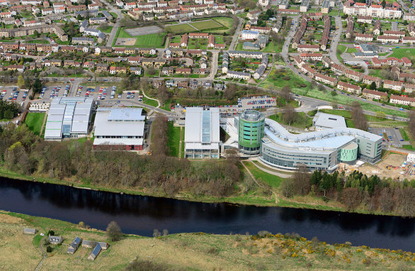

| Home | About RGU | Our Schools | Where are we? | Contact US |
Robert Gordon University has had a very interesting history. It has only been at university status since 1992, but it orignated as an educational institution founded by Robert Gordon in the 18th Century. The purpose of the institute was; "The Maintenance, Aliment, Entertainment & Education of young boys whose parents are poor and indigent... and to put them to Trades & Employment." Since the founding of the hospital in 1731, RGU has went through some major changes over the centuries, for example the dawn of the industrial revolution spawned a new need for people educated to a technical standard, therefor the school became the "Robert Gordon's Technical College." As time went on the school continued to expand to what we now know as Robert Gordon university.

Today, Much of the facilities in the city centre of Aberdeen are no longer affiliated with the university. Most buildings were separated into the Robert Gordon's College. RGC is now a prestigious private school which despite not being associated with RGU, still shares a common heritage, crest & motto. Most of the University's current schools are located within the Garthdee Campus in the Garthdee area of Aberdeen. This covers quite a large area due to having various buildings to accomodate the wide range of courses taught at RGU. There is numerous cantine areas aswell as a building dedicated to Physical Education & Leisure activities.